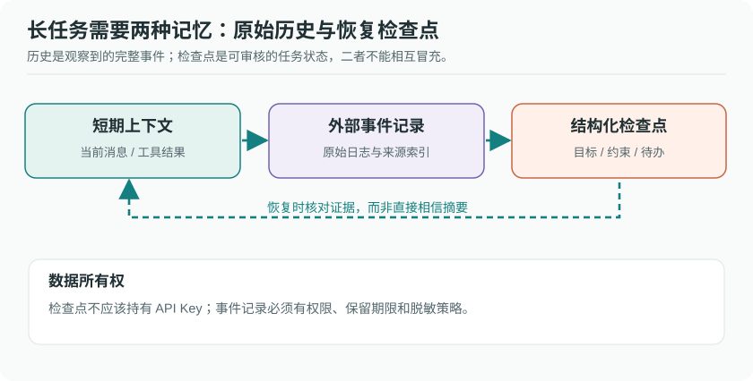
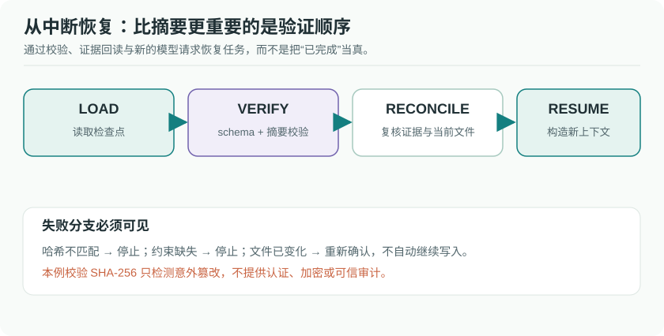

上下文持久化：让 Agent 从中断中可靠恢复
从消息历史到可验证的任务检查点，讨论证据保留、原子写入、恢复顺序与安全边界，并用离线 Handoff Journal 实现确定性测试。
长任务为什么需要持久化，而不只是缩短历史
Agent 在重构仓库时可能已经检查几十个文件、重现了测试失败，随后因为上下文容量、网络中断或手动停止退出。如果只保存一段自然语言总结，恢复时就无法确定哪些判断确实被测试证实，以及哪些修改已经写到磁盘。
最稳妥的做法是分清会话历史、证据引用与结构化任务检查点：历史回答“发生过什么”，检查点回答“现在有哪些已确认事实和未完成义务”。

三类上下文生命周期
| 类型 | 存放内容 | 可信边界 |
|---|---|---|
| 活跃 Messages 历史 | 完整 assistant/tool_use 和 user/tool_result 配对 | 不能在工具调用中间随意截断 |
| 恢复检查点 | 目标、约束、验证证据、尚未完成的步骤 | 可能遗漏细节，恢复时需要核对 |
| 稳定项目指令 | 团队规范、构建方式、重要目录 | 需要版本与来源，不等于会话历史 |
Claude Code 公开的 CLAUDE.md 和自动记忆解决的是项目指令与跨会话信息；Claude Platform 的 Compaction 可以替换部分消息历史。它们用途不同，不能等同为一个“5 阶段私有压缩器”。
设计一份不会假装任务完成的 Handoff
一个可恢复检查点必须保留不可变的用户约束、具体证据来源、已完成的可验证事实和 pending 事项。这里只实现受控的数据结构，不由模型生成或验证事实。
handoff = Handoff(
task="Fix parser regression",
constraints=("Never touch production data",),
verified=("Failing test reproduced",),
pending=("Apply minimal patch", "Run focused tests"),
evidence_refs=("tests/test_parser.py:32",),
)保存成 JSON 后，生成 SHA-256 校验值。恢复时必须核验摘要是否完整，之后再对照当前工作区；文件可能已经变化，仅凭 JSON 内容不能确认工作仍处于同一状态。
写入与恢复：四个不能跳过的步骤

from pathlib import Path
from handoff_journal import Handoff, save, load
path = Path("scratch/handoff.json")
digest = save(path, handoff)
recovered = load(path, digest)
assert recovered.constraints == handoff.constraints此示例将 JSON 写到同目录临时文件再原子替换，降低半写入风险；但哈希不是签名，写入也不提供加密与多进程互斥。不要用它存秘密或作为真实生产审计日志。
工具消息原子性与跨轮摘要的细节
历史可能包含 assistant 的多个 tool_use，后面紧随 user 的多个 tool_result。若只保留一半，后续 API 续传可能违反消息协议。正确的做法是先等待工具回合闭合，再创建 checkpoint 或调用官方 Compaction 机制。
对于需要保留的思考块、缓存标记、或 API Compaction block，应按官方现行接口处理，而不手动把任意字符串塞回原始消息并声称兼容。
隐私与恢复边界
检查点可能间接包含仓库秘密、用户隐私或敏感的工具结果。实践中必须结合最小化、脱敏、文件权限、保留期限与用户删除请求。当前离线示例不实现这些生产安全功能。
为什么摘要模型不能仅按价格选择
旧稿声称某个小模型价格固定为另一个的十分之一、摘要质量差距很小，这两句话依赖具体时期、定价、任务类型与评测标准，不适合未经测量地作为结论。选用摘要模型应记录总费用、可恢复性、关键事实丢失率、上下文长度和评测样本。
对关键文件路径、否定条件或安全边界，只看摘要“读起来通顺”是不够的；应对照原始引用做抽样核查。
练习：故障恢复测试
运行 python3 -m unittest discover -s examples -p 'test_*.py'。检查 examples/test_handoff_journal.py：保存恢复保持约束、损坏导致校验失败、丢失约束被拒绝、目标是 symlink 时拒绝写入。
workspace_revision 字段。模拟仓库代码已变化，测试恢复前必须要求人工重新确认；不要自动沿用旧的“测试通过”结论。参考资料与事实边界
- Claude Code：记忆与项目指令 — 区分项目指令、自动记忆与文件加载
- Claude Platform：Compaction 概览 — 服务端压缩机制与应用侧摘要的差异
- Claude Platform：Tool Use — 消息对和工具反馈约束
- Claude Agent SDK：会话持久化 — 官方 SDK 的会话方式需按版本核验
文中的 Journal 是公开 API 之外的自建教学格式；并不等于 Claude Code 原生会话存储，也不声称复现其内存组织方式。